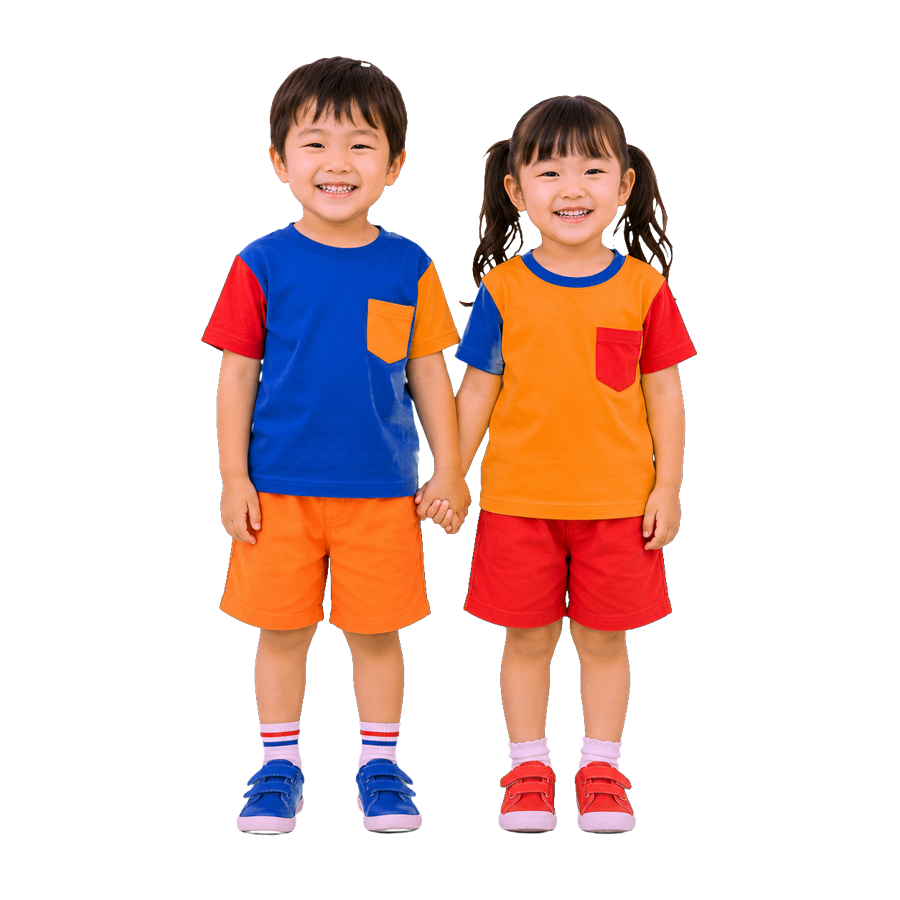
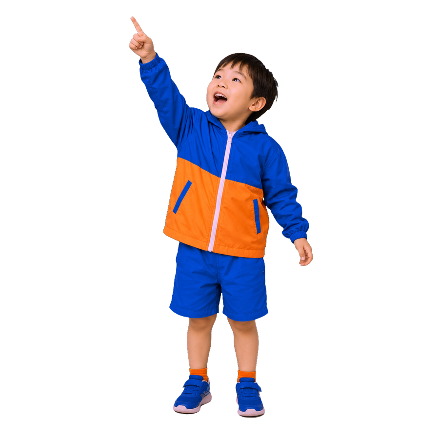

あそぶ？
ね！





地域とともに
About Us
子どもたちの「不思議」を、
いちばん大切にする園です。
もりのこ幼稚園は、子どもたち一人ひとりの個性と好奇心を尊重し、遊びを通じた主体的な学びを大切にしています。自然豊かな環境のなかで、友だちとの関わり、季節の移ろい、小さな発見を積み重ねながら、生きる力の土台を育みます。
園について詳しく
Education
わたしたちが大切にしていること
「遊び」「自然」「対話」。もりのこ幼稚園の保育は、この3つを土台に組み立てられています。
01
遊びが、学びになる
子どもにとって遊びはすべての入口。泥だんご、虫取り、ごっこ遊び——夢中になる体験のなかに、思考力・創造力・協調性の種があると信じています。
02
自然とともに、育つ
四季折々の自然に触れ、命の大切さや不思議さを体感します。畑での野菜づくり、森の散策、水遊び。五感をひらく体験を日常に組み込んでいます。
03
対話が、心を育てる
「どうしてそう思ったの？」「それ、いいね」。子ども同士の対話を大切にし、自分の気持ちを伝える力、相手を受け入れる力を育てます。
たからもの、みつけた。
園庭は、毎日が宝さがし。
どろだんご、まつぼっくり、だんごむし、かたつむり。
子どもたちが見つけた「きょうのたからもの」を、ちょっとのぞいてみませんか。
Safety & Care
安心して、預けられる場所であること。
のびのびとした保育は、確かな安全と健やかな食の上に成り立っています。
見守る安全対策
オートロックの門扉・防犯カメラ・職員の見守り体制で、登園から降園まで子どもたちを見守ります。定期的な避難訓練も実施しています。
からだをつくる給食
自園調理の温かい給食を提供。旬の食材を使った献立とアレルギーへの個別対応で、「食べる楽しさ」と健やかな成長を支えます。
預かり保育
教育時間の前後にお子さまをお預かりする預かり保育を実施。お仕事や急なご用事のあるご家庭も、安心してご利用いただけます。
Voice
保護者の声
Recruit
子どもと一緒に、
「おもしろい」を見つけませんか。
わたしたちが求めているのは、完璧な先生ではありません。子どもの「なぜ？」に一緒にワクワクできる人。経験よりも、子どもへのまなざしを大切にしています。
採用情報を見るContact Us
見学・お問い合わせは、
お気軽にどうぞ。
園の雰囲気は、来てみないとわかりません。
まずはお気軽に見学にお越しください。